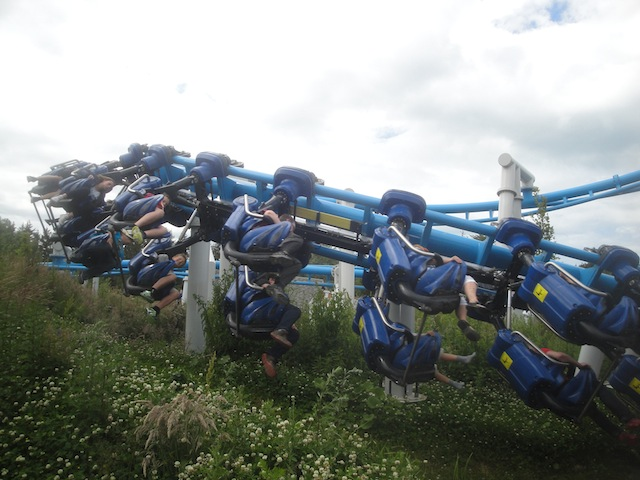
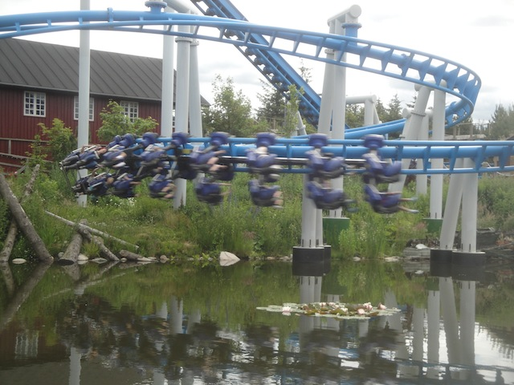
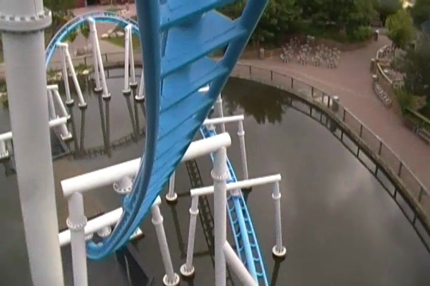

| |
Orkanen Review

We're here at Fårup Sommerland to ride Orkanen. A Family Inverted Coaster from Vekoma. And I have to say. They really are improving with these things. They started out with the Kiddy SLCs (both the regular ones and the slightly smaller ones that are much better due to their lap bars). Then they came out with a bigger Family Suspended Coaster that was a lot of fun. And finally, we have Orkanen. The biggest model of them all (It's been cloned repeately).And this thing is good. I know it's just a family coaster and not that intense. But this ride is just a whole lot of fun. All right. Let's hop in the trains, pull down the lap bars (Seriously, those original Kiddy SLCs need lap bars put in ASAP), and away we go. We roll around a turn and climb the lifthill. For once, there's no catwalk underneath us, so we can actually get a view of what we're about to ride. It's not much, but it's a nice pleasant view of Fårup Sommerland, as well as Falken. All right. We're at the top, and we head down the first drop. It's slightly curved, but for the most part, straight. It's weird. We just sort of head down at first, but we don't really gain much speed until we're halfway down and then we just are off. Kind of awkward, but OK. It's still fun. We dive into the water, going through an underwater tunnel. TAKE THE POND!!!! But before you can hold your breath, you're out of the tunnel and whipping around this really tight overbanked turn. You don't think much of it since its small, but it actually has a nice little punch. We're now just gliding through some straight track over the water, but I'm enjoying it. We then head around a turn, up a small hill, and through a small helix to the ground. We head up another small hill over the station, only to again, head down into a small helix towards the ground. And yeah, you just get really close to the grass. We then head around a couple turns that are really low to the ground. And I don't know why, but I just really like this. It's really relaxing. For some strange reason, the song "Honey and the Bee" by Owl City was playing in my head during this part of the ride. We then head into a small shack and through a small dip. TAKE THE HOUSE!!! We then head through a sharp banked turn, and...STATION!!! We just glide right into the station. So that's Orkanen. This ride may not be that intense, but it is just fun. And definately stronger than it looks. It's just such an enjoyable and relaxing ride. And hey, this model of Vekoma Family Suspended Coasters is growing in popularity, with some more clones popping up in Poland and China. So give this coaster a ride. It's just a lot of fun.
6/10
Location: Fårup Sommerland
Opened: 2013
Built by: Vekoma
Last Ridden: June 20, 2014
I have ridden this exact same ride at the following parks.
Dollywood
Orkanen Photos





Home
|